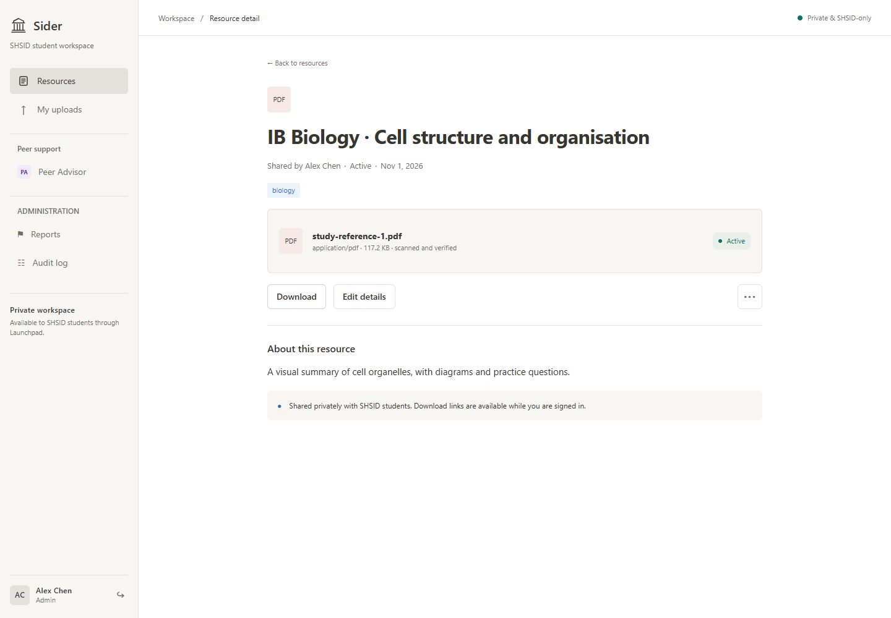
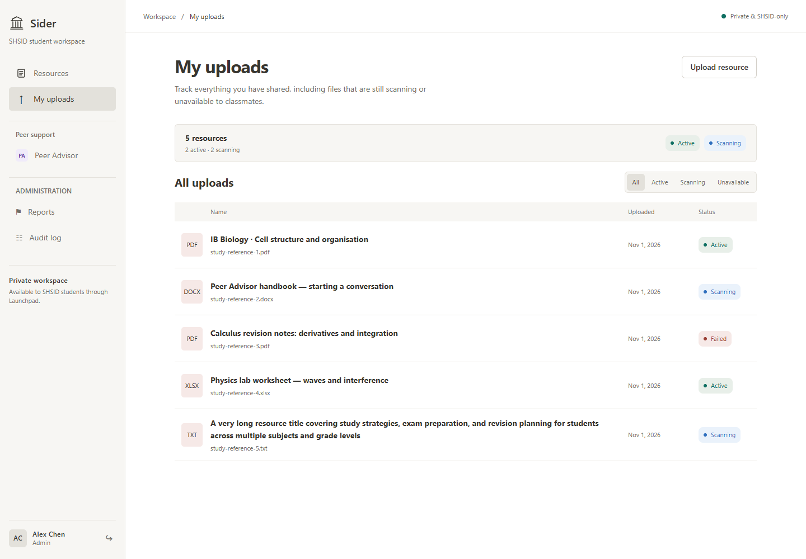
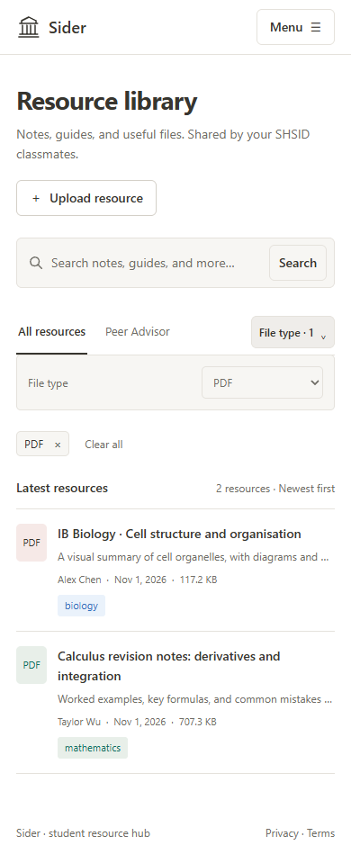
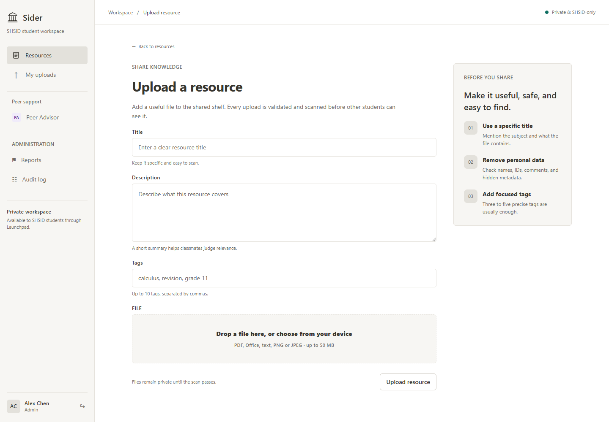

02 / Campus software / September 2026–present
A shared place
to learn.
Sider
A focused resource-sharing platform for students, built around discovering useful materials and managing how they are shared.

Interface walkthrough
Interface review captures from the project archive.






A campus resource hub
Notes were scattered across classmates’ posts, student-organization websites, and the school’s BB platform. Finding material for one subject meant switching between several places. I started Sider so SHSID students could search and upload resources in one shared library.
The product centers on a concrete question: how can students find useful materials while keeping shared files and access manageable?
A focused first version
The MVP prioritizes resource sharing. Search and tags organize the library; students can manage their own uploads, and administrators can review reports and moderate resources.
Discussion threads, social feeds, recommendations, and online file previews sit outside this version. Keeping the scope focused makes the main resource workflow easier to evaluate.
Designing the whole workflow


Sharing a file involves more than an upload button. Sider connects student authentication, resource metadata, private file storage, malware scanning, and download access.
Search supports titles, descriptions, tags, and filenames. Moderation includes reports, resource visibility controls, user suspension, and audit records. Together, these features address how a shared library is maintained over time.
My role
I founded the project and lead a six-person team: two members support product testing, two conduct market research, and two work on web development, including me. I assign tasks and make the product, interface, technology-stack, workflow, and deployment decisions.
I designed the interface and directed an AI-assisted implementation; the backend was primarily generated with AI. My contribution is best understood as product leadership, system specification, design, deployment, and testing rather than sole authorship of every line of code.
Implementation and evidence
The repository documents a Next.js and TypeScript application with PostgreSQL, private object storage, and automated checks. Its traceability matrix records implemented paths for authentication, search, uploads, downloads, and moderation.
Implementation is one stage of the project. The same records identify remaining production checks, including end-to-end service verification, recovery exercises, and browser and accessibility acceptance.
Current status
Sider is a deployed test version at siderlearn.com ↗. Search, upload, download, login, and administration have run in the deployed application.
Four to five students have participated in early testing, but the project does not yet have school-wide adoption or a completed end-to-end user study. Feedback has informed changes such as additional tags, subject categories, more flexible descriptions, and multi-file upload. The central challenge is still motivating students to contribute their own class notes and return to the library.
Further exploration
Alongside campus software, my portfolio explores computational modeling and robotics.
Explore the solar-aircraft study ↗Home